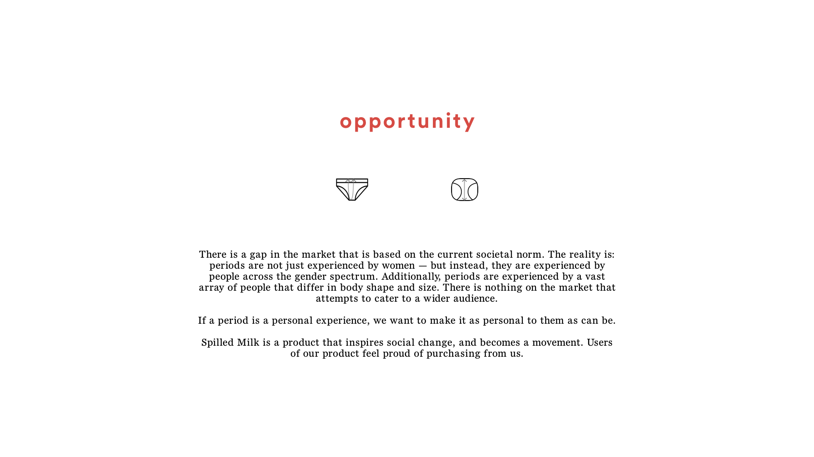
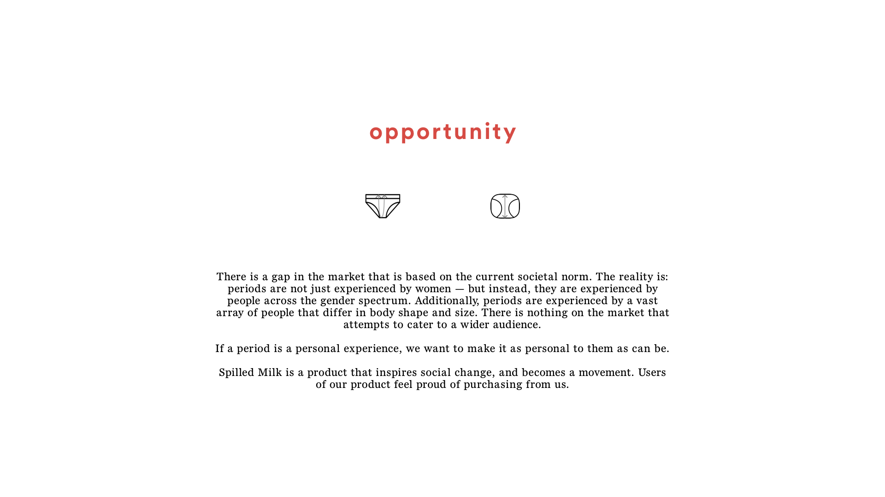

The Switch by Lena
A web extension that aims to address misconceptions and apprehensions to make people feel more comfortable with trying a menstrual cup
Team
Kristina Kim
Elizabeth Lo
Macguire Rintoul
Isabelle Soares
Jordan Yep
Roles
Experience Design
Interface Design
Visual Design
User Research
Tools
Sketch
Figma
Keynote
Adobe Creative Suite
Duration
This project was created over a period of 4 weeks.
Brief
For this senior level course, the objective is to find a client and a business problem with an opportunity for a digital intervention.
Spilled Milk
This project first started as part of the 2018 UBC eProject LiteHack competition and later inspired the Lena project. SpilledMilk was created in 7 hours and placed third.
Duration
FAs part of the 2018 UBC eProject LiteHack competition, this project was created over seven hours
Brief
LiteHacks is a code-free hackathon. The goal was to conceptualize, develop, and tweak a product idea into a prototype and business strategy.
 
 Problem
Product Apprehension
Lack of exposure in mainstream media compared to other menstrual products has slowed the normalization of cups. -Responses from “Menstrual Cup Questionnaire” (2018) — 457 respondents
Established Habits
The majority of people that menstruate already use tampons, pads, or liners and aren’t motivated to take a physical and emotional risk. -Schwedel, H. and Responses from “Menstrual Cup Questionnaire” (2018) — 457 respondents (2015)
Opportunity
Currently, Lena's existing website's information is disorganized and spread throughout the site. Less important things like pH levels and photos are presented before getting to the point and they describe the product, but does not effectively explain how it is better.
After a content audit of the website and doing extensive research, we discovered four main opportunities:
- Leveraging Lena’s status as #1 Beginner Cup could create the perception of an easy switch.
- Addressing the apprehensions of first-time customers could help turn skeptics into supporters.
- Shifting Lena’s brand positioning toward gender neutrality could be more inclusive of all menstruators on the gender spectrum.
- Contributing to the open discussion of periods.
Landing Page
Clear message leveraging brand status and a reason for the visitor to click on the call to action. Lena’s existing content remains below, and The Switch can also be accessed under ‘Using Lena’.
Primary Information
The key points present the essential information to owning a menstrual cup. The sequence addresses common pain points brought up in user testing and the questionnaire.
Secondary Information
More details are available for each section of the onboarding if people are interested or have follow-up questions.
Purchase
Lena has experienced cup users ready to provide personal support, something which is only emphasized in the post-purchase stage. Lena also offers a full refund if the customer is not happy with the Lena Cup.
Entice - Discovery
Because Lena is an online brand, social media is a seamless touchpoint. Instagram ads can capture mobile customers as well as promote the Lena account.
Extend - Stories
Lena’s stories section currently doesn’t have personal stories related to menstrual cups, which have helped new customers relate in other cases. After 2 months, Lena will reach out to customers to check in and make sure the Lena cup is working for them, with an opportunity to have their story added to the stories section.
Entice - Discovery
Additionally, Facebook ads can capture desktop users and promote Lena’s page.
Evaluation
Feasible
As a small company growing into our fourth year, I am sorry to say that we are limited in our time and resources. We are a small team working across a few different time zones.” -Lena representative in response to interview request
Viable
The digital experience aims to encourage purchases, which in turn will create advocates that can be leveraged to continue the cycle.
Desirable
Participants in the user test wanted to see how the cup would fit into their lifestyle first, and worry about the details later.
Delivering Value
Tangible
People that are new to menstrual cups can discover what their life may look like if they were to make the switch.
Intangible
Potential customers are welcomed no matter their lifestyle or background.
Aspirational
Supporting the brand or becoming an advocate allows customers to challenge the period taboo.
Top
Next
Insights
Researching into our opportunities, we focused in on three main insights:
Period Taboo
As an unspoken topic, menstruators may not feel comfortable discussing their concerns.
Gender Dysphoria
A conflict between a person’s physical or assigned gender and the gender with which they identify.
Lifestyle Change
Despite the learning curve, some see it as an “upgrade” from other menstrual products.
Menstruator Segments
These were the different cup menstruators we were looking at:
Strongly Opposed
A“I would feel gross re-using a cup, and having to empty out my blood from that cup grosses me out.” -Survey Respondent
Accustomed & Uncertain
Members who have applied for loans but were not approved, or were not able to get the interest rate they wanted due to their credit score.
“I would consider if I knew more about them I think. I’d be uncertain about how to use it, and what to do with it when it’s not being used.” -Survey Respondent
Unsuccessful Switch
“In general, I think they're necessary and I need to be using them more, but I worry about comfort throughout the day and leakage.” -Survey Respondent
The Switch focuses on the Accustomed & Uncertained because we felt that the Strongly Opposed are unlikely to make the change and that Lena already has a lot of resources for the Unsuccessful Switch.
Persona
This is our persona. She is an active student who likes to get outdoors when they can. She's usually on the go, and is skeptical of changing their lifestyle.

Journey Framework
In the current Vancity experience, resources for cup users are hard to find and scattered throughout the website. The Switch intervenes at the awareness and consideration stage, it aims to help convert open skeptics into cup menstruators by providing clear and concise information in a comfortable and conversational way.

Top
Next